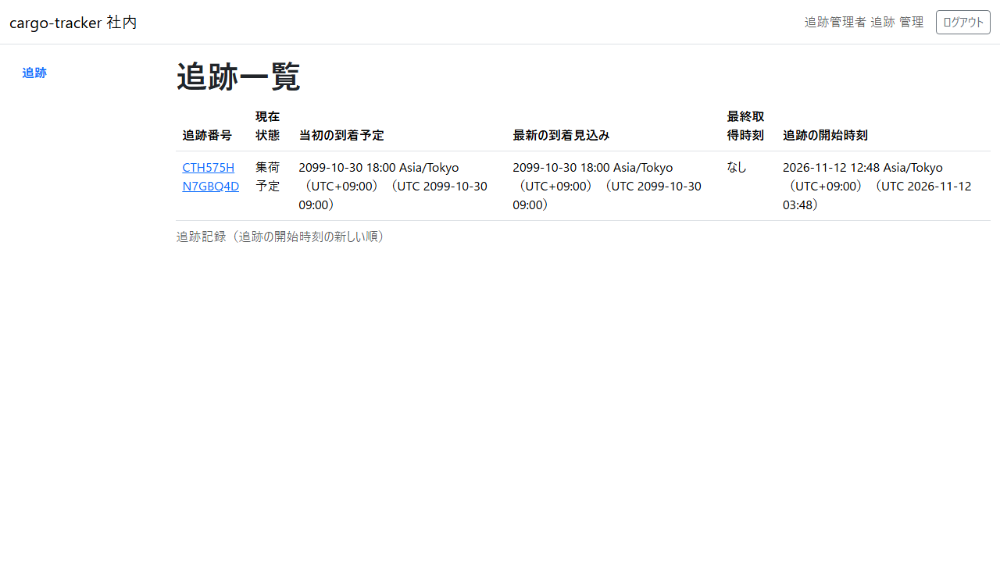
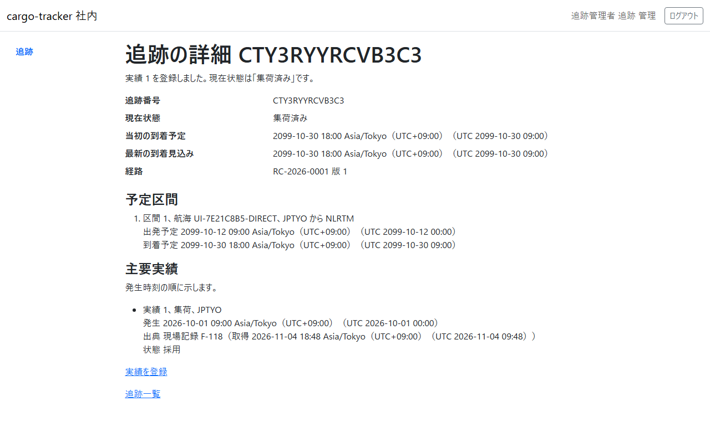
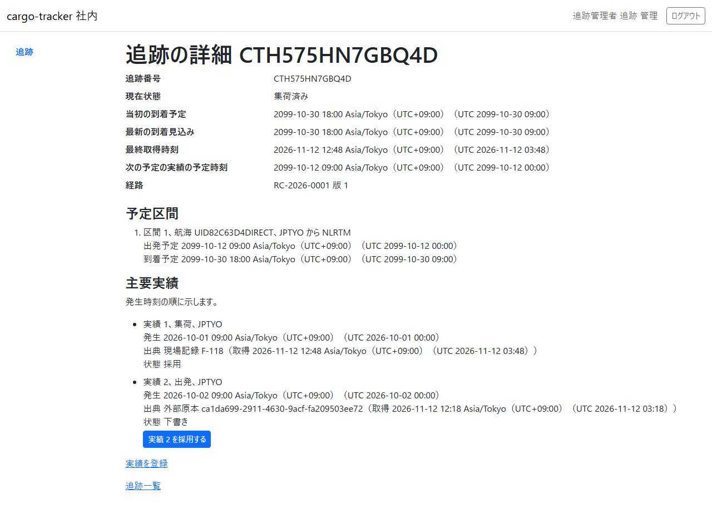
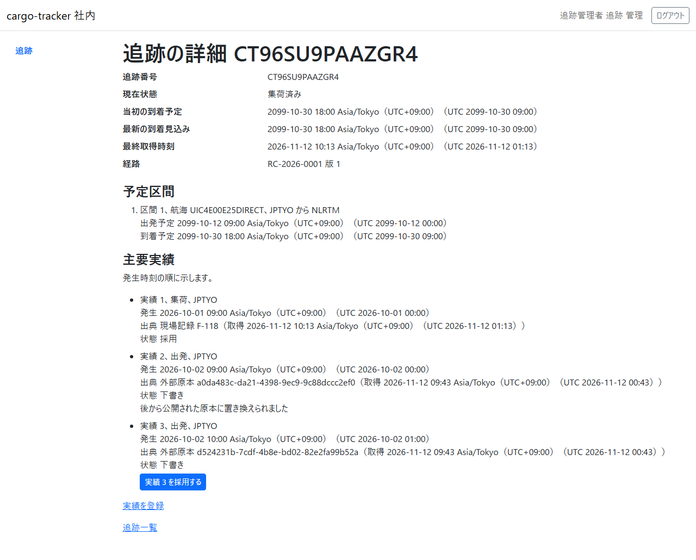
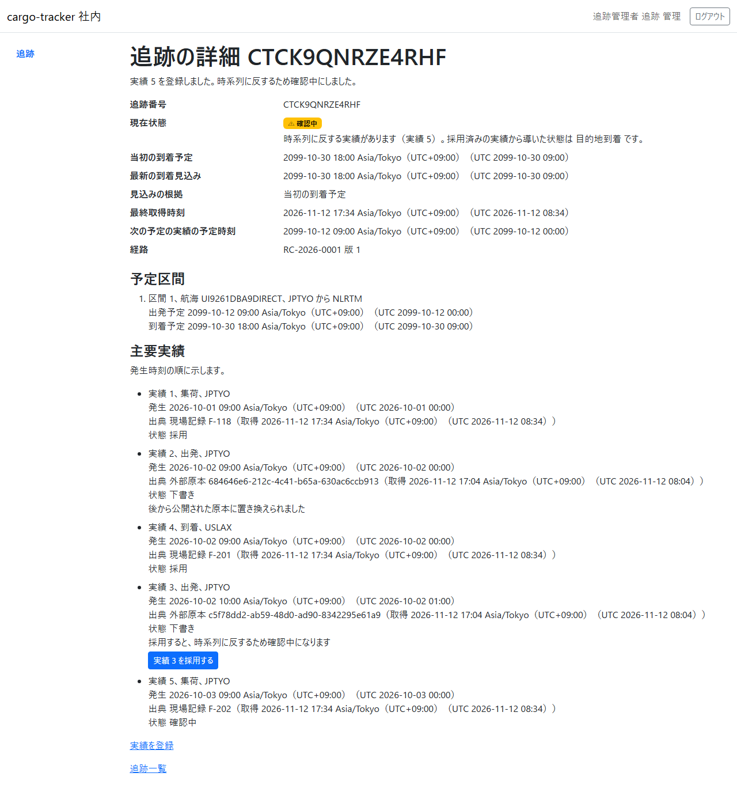
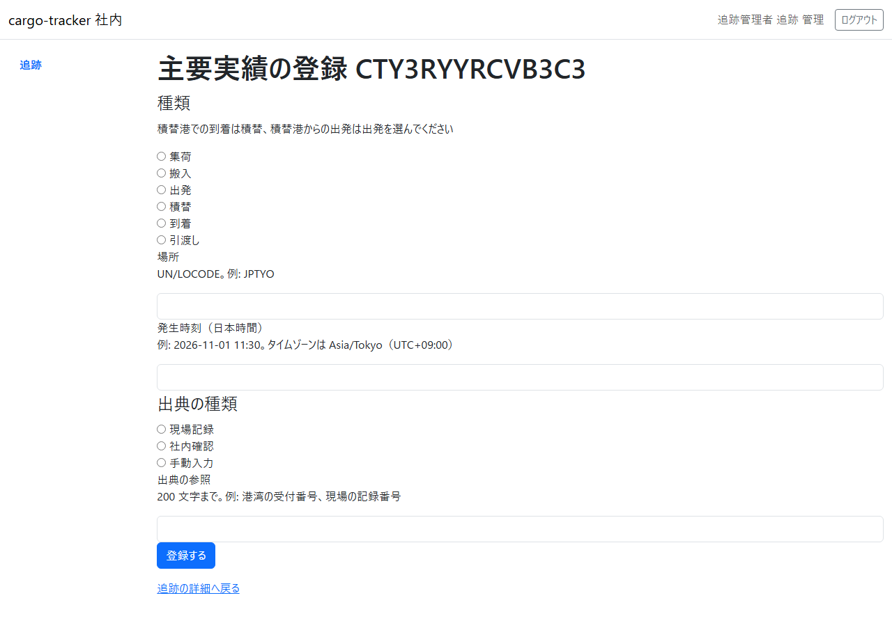

9 章 追跡管理
本予約が確定して追跡が始まった貨物について、追跡管理者が予定と主要な実績を確かめ、集荷などの実績を出典とともに登録する画面です。本章は WF-1 の工程 7（主要な実績を登録する）に対応します。
画面の開き方: ナビゲーションの「追跡」（URL: /staff/tracking-records）。追跡管理者はログインするとこの画面が開きます。
| 画面 | 役割 | 節 |
|---|---|---|
| 追跡一覧 | 追跡中の貨物を、追跡の開始時刻の新しい順に確かめる | 9.1 |
| 追跡の詳細 | 現在状態・到着の予定・予定区間・主要実績を確かめる | 9.2 |
| 主要実績の登録 | 実績の種類・場所・発生時刻・出典を入れて登録する | 9.3 |
登録した実績は、荷主の追跡の照会（5.3）にも示されます。
9.1 追跡一覧
この画面でできること
- 追跡中の貨物を、追跡の開始時刻の新しい順に確かめ、追跡の詳細を開きます
- 表示されるのは、あなたの担当企業の荷主の追跡記録だけです。担当企業は、システム管理者が利用者の管理（11.8）で割り当てます
画面の開き方
- ナビゲーションの「追跡」（URL:
/staff/tracking-records）
画面の説明

| # | 項目 | 説明 |
|---|---|---|
| ① | 追跡番号 | クリックすると追跡の詳細が開きます |
| ② | 現在状態 | 例: 「集荷予定」「集荷済み」。「確認中」は、印（⚠）の付いた状態バッジで示されます（9.2）。次の予定の実績が届いていない追跡には、現在状態の後ろに印（⚠）の付いた「鮮度超過」が並びます（9.2） |
| ③ | 当初の到着予定 | 予約したときの到着予定。実績を登録しても変わりません |
| ④ | 最新の到着見込み | 採用した実績から見込んだ、いまの到着の見込み（9.2） |
| ⑤ | 最終取得時刻 | 採用した実績の出典を取得した日時のうち最も新しいもの。採用した実績がなければ「なし」と示されます |
| ⑥ | 追跡の開始時刻 | 本予約の確定の後に追跡が始まった日時 |
操作手順
- 実績を登録する貨物の追跡番号をクリックします
注意・補足
- 新しい 50 件まで示します
- 担当企業がまだないときは、「担当企業がまだないので、表示できる追跡記録はありません。システム管理者に担当企業の割り当てを頼んでください。」とだけ示され、追跡記録は表示されません。システム管理者に担当企業の割り当てを頼んでください
9.2 追跡の詳細
この画面でできること
- 貨物の現在状態・当初の到着予定・最新の到着見込み・経路・予定区間・主要実績を確かめ、実績の登録を開きます
- 取り込んだ主要実績の下書きを採用し、現在状態に効かせます
画面の開き方
- 追跡一覧の追跡番号（URL:
/staff/tracking-records/{追跡番号}）
画面の説明

| # | 項目 | 説明 |
|---|---|---|
| ① | 結果のメッセージ | 実績を登録した直後に「実績 N を登録しました。現在状態は「…」です。」と示されます |
| ② | 追跡番号・現在状態・当初の到着予定・最新の到着見込み・最終取得時刻・次の予定の実績の予定時刻・経路 | 経路は確定した経路の番号と版。最新の到着見込みと最終取得時刻は下の「最新の到着見込みと最終取得時刻」。最終取得時刻は、採用した実績がなければ「まだありません」と示されます。次の予定の実績の予定時刻は下の「鮮度超過の追跡を確かめる」。次の予定の実績がなければ「なし」と示されます |
| ③ | 予定区間 | 区間ごとの航海・積地から揚地・出発予定・到着予定 |
| ④ | 主要実績 | 発生時刻の順。実績番号・種類・場所、発生・出典（取得時刻）・状態。状態は、現在状態を決めるのに使う「採用」、取り込んだ実績が届いたときの「下書き」、完了した追跡に届いた実績の「保持のみ」、採用済みの実績と時系列に反する実績の「確認中」です。取り込んだ実績の出典は「外部原本 …（取得 …）」と示されます。採用できる下書きには「実績 N を採用する」ボタンが、採用しない下書きにはその理由（下の「注意・補足」）が示されます |
| ⑤ | 「実績を登録」 | 主要実績の登録（9.3）を開きます |
| ⑥ | 「追跡一覧」 | 追跡一覧に戻ります |

操作手順
- 予定区間と主要実績を確かめます
- 新しい実績があれば「実績を登録」をクリックします
取り込んだ下書きを採用する

- 主要実績の一覧で、状態「下書き」の実績を確かめます。同じ主要実績の下書きが複数あるときは、後から公開された下書きだけに「実績 N を採用する」ボタンが示されます
- 内容（種類・場所・発生時刻・出典）を確かめ、「実績 N を採用する」をクリックします
- 「実績 N を採用しました。現在状態は「…」です。」と示され、実績の状態が「採用」になります。現在状態は採用した実績から決め直されます
- ボタンの下に「採用すると、時系列に反するため確認中になります」と示されている下書きは、採用すると状態が「確認中」になり、追跡の現在状態も「確認中」になります。採用すると「実績 N を採用しました。時系列に反するため確認中にしました。」と示されます。採用する前に、採用済みの実績と食い違っていないかを確かめてください
確認中の追跡を確かめる

登録した実績や採用した下書きが、採用済みの実績と時系列に反するとき（例: 到着の後に、到着より後の時刻の集荷）、その実績は消えずに状態「確認中」で残り、追跡の現在状態は「確認中」になります。
- 現在状態の「確認中」の後に示される「時系列に反する実績があります（実績 N）。採用済みの実績から導いた状態は M です。」を読みます。N は最初に確認中になった実績の番号、M は採用済みの実績だけから決めた状態です
- 主要実績の一覧で、状態「確認中」の実績と、採用済みの実績を見比べ、どちらが正しいかを確かめます
- 確認中を解く操作（訂正の承認）は今後のリリースで提供します。それまで、追跡は確認中のまま残ります。後から時系列どおりの実績を登録しても、現在状態は確認中のままです
最新の到着見込みと最終取得時刻
最新の到着見込みは、採用した出発・積替・到着の実績から決まります。当初の到着予定は変わりません。
- 予定より遅れた出発・積替の実績を登録または採用すると、最新の到着見込みはその遅れの分だけ当初の到着予定より後ろに動きます。予定区間の順で最も後の実績の遅れを使うので、積替港で遅れを取り戻すと見込みも戻ります
- 予定どおり、または予定より早い出発では、見込みは早まりません
- 最後の区間の揚地での到着の実績を採用すると、見込みはその到着の時刻になります（予定より早い到着も、その時刻になります）
- 確認中・下書き・保持のみの実績では、見込みも最終取得時刻も動きません
- 最終取得時刻は、採用した実績の出典を取得した日時のうち最も新しいものです。荷主の照会の結果にも同じ日時が示されます
鮮度超過の追跡を確かめる
次に届くはずの実績（出発・積替・到着）が予定時刻から 36 時間を過ぎても採用されていない追跡は、「鮮度超過」と示されます。追跡一覧では現在状態の後ろに印（⚠）の付いた「鮮度超過」が並び、追跡の詳細では「次の予定の実績が予定時刻から 36 時間を過ぎても届いていません。」と示されます。
- 次の予定の実績は、予定区間の出発予定・到着予定のうち、採用した実績が当たる最も後のものの次です（例: 区間 1 の出発を採用していれば区間 1 の積替。何も採用していなければ区間 1 の出発）。最後の区間の揚地での到着を採用すると、次の予定の実績はなくなります
- 予定時刻は予定区間の時刻のままです。前の実績が遅れても、予定時刻は後ろに動きません
- 画面を開いた時刻が、次の予定の実績の予定時刻から 36 時間ちょうど以上なら鮮度超過です
- 鮮度超過は、画面を開いたときに判定して示すもので、追跡の現在状態は変わりません（「確認中」にはなりません）。確認中の追跡が鮮度超過なら、「確認中」と「鮮度超過」が並びます
- 遅れていた実績を登録または採用すると、次に画面を開いたときに次の予定の実績が進み、印が消えます。確認中・下書き・保持のみの実績では次の予定の実績は進みません
- 完了した追跡（引渡しを採用した追跡）は判定しません
- 荷主の追跡の照会には、鮮度超過も次の予定の実績も示されません
- 鮮度超過の追跡だけを一覧する絞り込みは、今後のリリースで提供します。追跡一覧は新しい 50 件までなので、それより古い追跡の鮮度超過は一覧に出ません
注意・補足
- 主要実績がまだなければ「主要実績はまだありません。」と示されます
- 担当企業の外の追跡記録を URL から開くと、存在しない画面と同じく「画面が見つかりません」と示されます
- 現在状態は、採用した主要実績から決まります（例: 集荷の実績で「集荷済み」）。追跡管理者が登録した実績は「採用」になります。ただし、採用済みの実績と時系列に反する実績は「確認中」、完了した追跡に登録した実績は「保持のみ」になります（9.3）
- 時系列に反するとは、実績の種類の進み（集荷 → 搬入 → 出発・積替 → 到着 → 引渡し）と発生時刻の前後が、採用済みの実績のどれかと逆になることです。出発と積替は同じ進みとして扱います。発生時刻が同じなら反しません
- 確認中の追跡は、荷主の追跡の照会でも現在状態が「確認中」と示されます。確認中の実績そのものは荷主に示されません
- データ責任者が外部データの取込（12 章）で採用した主要実績は、状態「下書き」で届きます。届くまで少し時間がかかります。下書きは現在状態を変えず、荷主の追跡の照会にも示されません
- 提供元の記録の発生時刻がいまより後でも、下書きで届きます。提供元の記録をそのまま残すためです。未来の時刻を登録できないのは、主要実績の登録（9.3）だけです
- 下書きは、採用するまで現在状態を変えません。採用すると、採用した人と時刻が記録されます
- 提供元が同じ主要実績の値を後から直したときは、下書きがもう 1 件届きます。前の下書きは消えず、「後から公開された原本に置き換えられました」と示されます。採用できるのは後から公開された下書きだけです。提供元が元の値の原本を後から公開し直したときは、その下書きが採用できる下書きになります
- 採用できる下書きでも、次のときは採用のボタンを出さず、理由を示します
- 「採用済みの実績と値が違います」: 同じ主要実績をすでに採用していて、新しい下書きの値がそれと違うとき。採用済みの実績は、この画面では直せません（訂正の操作は今後のリリースで提供します）
- 「採用済みの実績と同じ値です」: 同じ値をすでに採用しているとき。採用は要りません
- 「確認中の実績と値が違います」「確認中の実績と同じ値です」: 同じ主要実績の下書きを採用して確認中になっているとき。確認中の実績は、この画面では直せません
- 「取消済みの予約の実績は採用できません」「完了した追跡の実績は採用できません」: 予約が取り消されたか、追跡が完了した後
- 「発生時刻がいまより後の実績は採用できません」: 発生時刻になってから採用してください
- 「実績 N を採用する」をクリックしたときに、画面を開いた後でほかの更新（新しい下書きの到着など）があったときは、「ほかの更新が先にこの追跡記録を変更しました。最新の主要実績を確かめ、必要なら、もう一度採用してください。」と示され、採用されません。示された最新の主要実績を確かめ直してください
- 予約が完了した貨物と、採用した実績が引渡しまで進んだ貨物に届いた実績は、状態「保持のみ」で残ります。現在状態を変えず、荷主の追跡の照会にも示されません。現在状態が「確認中」でも、採用した実績に引渡しがあれば同じです
- 追跡番号が見つからない実績と、取消済みの予約の実績は下書きにならず、追跡の詳細に示されません。データ責任者に下書きが届いているかを聞かれたら、この画面の主要実績を確かめて伝えてください（12 章）
9.3 主要実績の登録
この画面でできること
- 集荷・搬入・出発・積替・到着・引渡しの実績を、場所・発生時刻・出典とともに登録します
画面の開き方
- 追跡の詳細の「実績を登録」（URL:
/staff/tracking-records/{追跡番号}/milestones/new）
画面の説明

| # | 項目 | 説明 |
|---|---|---|
| ① | 種類 | 「集荷」「搬入」「出発」「積替」「到着」「引渡し」。積替港での到着は積替、積替港からの出発は出発を選びます |
| ② | 場所 | 港の UN/LOCODE（例: JPTYO） |
| ③ | 発生時刻（日本時間） | 「2026-11-01 11:30」の形 |
| ④ | 出典の種類 | 「現場記録」「社内確認」「手動入力」 |
| ⑤ | 出典の参照 | 200 文字まで。例: 港湾の受付番号、現場の記録番号 |
| ⑥ | 「登録する」 | 登録します |
操作手順
- 種類を選び、場所と発生時刻を入れます
- 出典の種類を選び、出典の参照を入れます
- 「登録する」をクリックします
- 追跡の詳細に戻り、「実績 N を登録しました。現在状態は「…」です。」と示されます。次のときは文が変わります
- 採用済みの実績と時系列に反するとき: 「実績 N を登録しました。時系列に反するため確認中にしました。」（確認中の追跡を確かめる）
- 完了した追跡（予約が完了したか、採用した実績が引渡しまで進んだ）に登録したとき: 「実績 N を保持のみで登録しました。完了した追跡の現在状態は変わりません。」
注意・補足
取消済みの予約の追跡には登録できません。「取消済みの予約には主要実績を登録できません。」と示され、入力した値は残ります
集荷・引渡しの実績を登録して実績が「採用」になると、少し後に予約の状態が進みます。集荷で「輸送中」、引渡しで「輸送完了」です。営業担当者は予約の詳細（7.3）を開き直して確かめます。取り込んだ下書きを採用したときも同じです。実績が「確認中」「保持のみ」のときは、予約の状態は進みません
担当企業の外の追跡記録の主要実績の登録を URL から開くと、存在しない画面と同じく「画面が見つかりません」と示されます。入力に誤りがあっても、同じ出典の実績がすでにあっても同じです。送ったときは、試行が監査のため記録されます
発生時刻は、登録する時刻より前にしてください。未来の時刻は登録できません
同じ出典の種類と参照の実績がすでにあるときは、新しい実績を作らず、既存の実績を示します（「出典（…）の実績はすでに登録されています（実績 N）。今回の入力は登録していません。」と「実績 N を一覧で見る」）
入力に誤りがあると、画面の上に誤りの一覧が示され、入力した値は残ります
画面を開いた後に、ほかの更新が先に同じ追跡記録を変更していたとき（ほかの追跡管理者の登録や、取り込んだ実績が届いたとき）は、登録されずに追跡の詳細に戻り、「ほかの更新が先にこの追跡記録を変更しました。最新の主要実績を確かめ、必要なら、もう一度登録してください。」と示されます